Origines extraterrestres
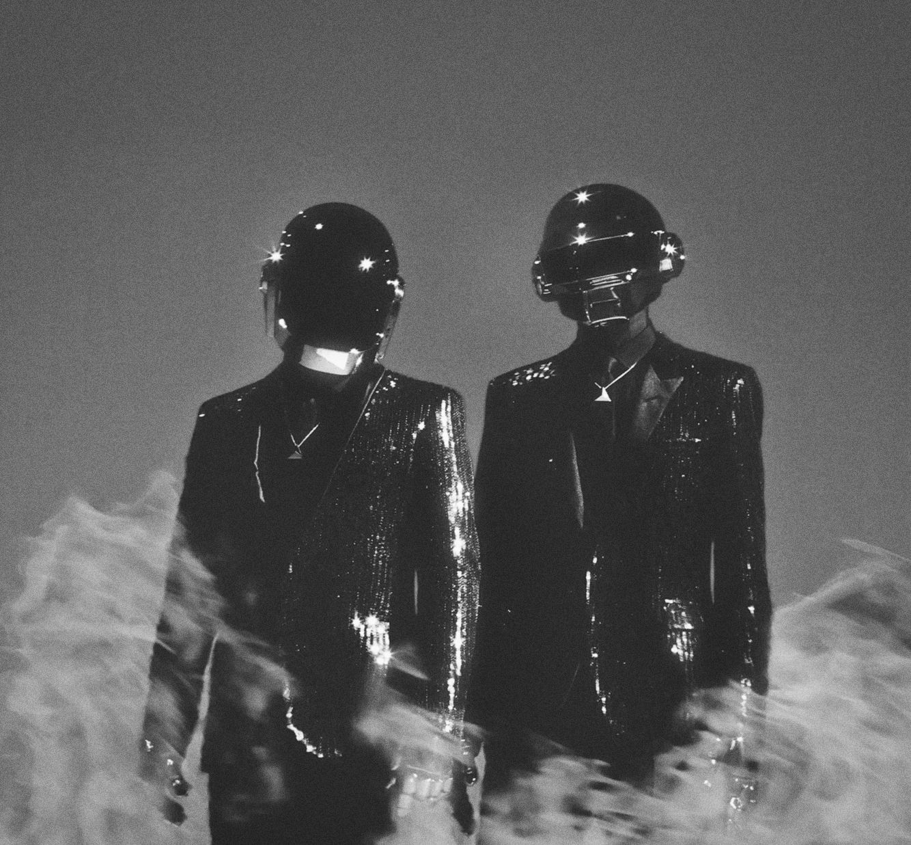
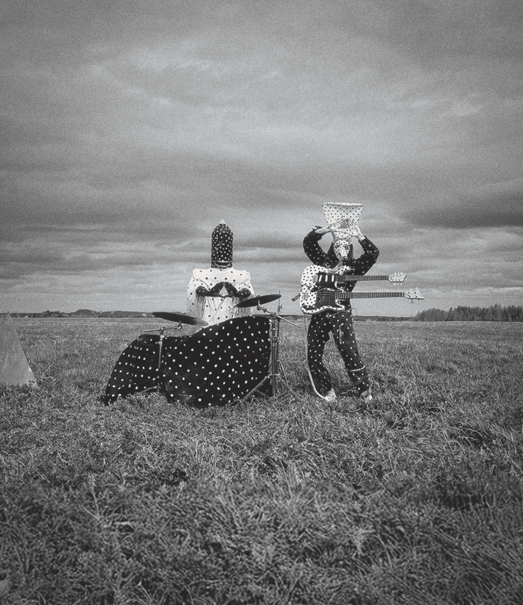

Interstella 5555 et Voyager
Vous dites venir d'une autre planète...
??
??
Consultez sa soeur
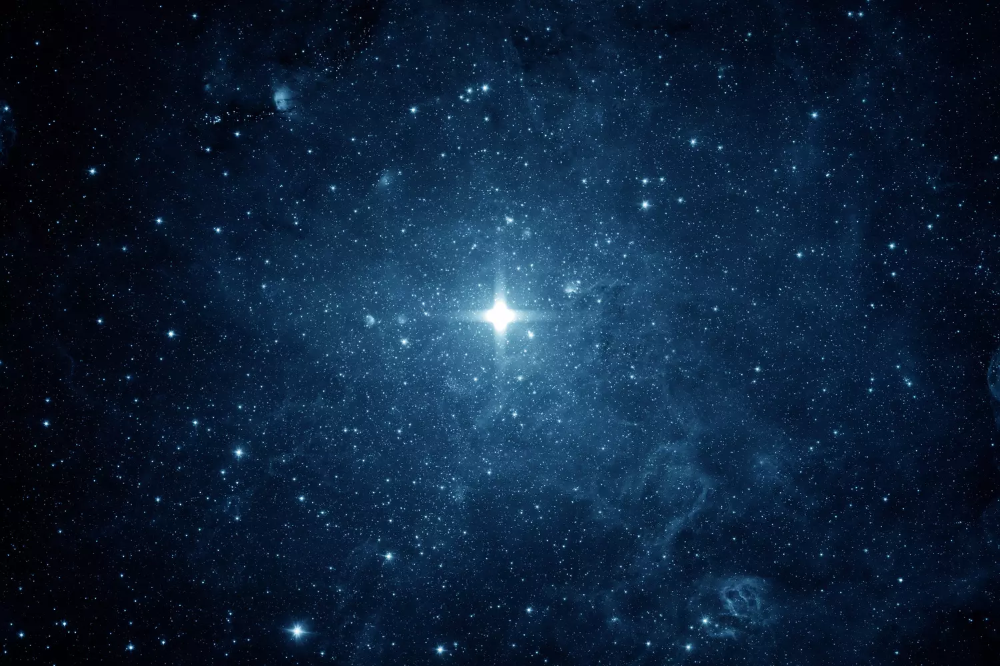
Wikipedia
Hasce virium quantitates brevitatis gratia nominare licet vires absolutas, acceleratrices & motrices, & distinctionis gratia referre ad corpora, ad corporum loca, & ad centrum virium: Nimirum vim motricem ad corpus, tanquam conatum & propensionem totius in centrum, ex propensionibus omnium partium compositum; & vim acceleratricem ad locum corporis, tanquam efficaciam quandam, de centro per loca singula in circuitu diffusam, ad movenda corpora quæ in ipsis sunt; vim autem absolutam ad centrum, tanquam causa aliqua præditum, sine qua vires motrices non propagantur per regiones in circuitu; sive causa illa sit corpus aliquod centrale (quale est Magnes in centro vis Magneticæ vel Terra in centro vis gravitantis) sive alia aliqua quæ non apparet. Mathematicus saltem est hic conceptus. Nam virium causas & sedes physicas jam non expendo.
Est igitur vis acceleratrix ad vim motricem ut celeritas ad motum. Oritur enim quantitas motus ex celeritate ducta in quantitatem Materiæ, & vis motrix ex vi acceleratrice ducta in quantitatem ejusdem materiæ. Nam summa actionum vis acceleratricis in singulas corporis particulas est vis motrix totius. Unde juxta Superficiem Terræ, ubi gravitas acceleratrix seu vis gravitans in corporibus universis eadem est, gravitas motrix seu pondus est ut corpus: at si in regiones ascendatur ubi gravitas acceleratrix fit minor, pondus pariter minuetur, eritq; semper ut corpus in gravitatem acceleratricem ductum. Sic in regionibus ubi gravitas acceleratrix duplo minor est, pondus corporis duplo vel triplo minoris erit quadruplo vel sextuplo minus.
Tempus absolutum a relativo distinguitur in Astronomia per Æquationem Temporis vulgi. Inæquales enim sunt dies Naturales, qui vulgo tanquam æquales pro Mensura Temporis habentur. Hanc inæqualitatem corrigunt Astronomi ut ex veriore Tempore mensurent motus cælestes. Possibile est ut nullus sit motus æquabilis quo Tempus accurate mensuretur. Accelerari & retardari possunt motus omnes, sed fluxus Temporis absoluti mutari nequit. Eadem est duratio seu perseverantia existentiæ rerum, sive motus sint celeres, sive tardi, sive nulli; proinde hæc a mensuris suis sensibilibus merito distinguitur, & ex ijsdem colligitur per Æquationem Astronomicam. Hujus autem æquationis in determinandis Phænomenis necessitas, tum per experimentum Horologii oscillatorii, tum etiam per Eclipses Satellitum Jovis evincitur.
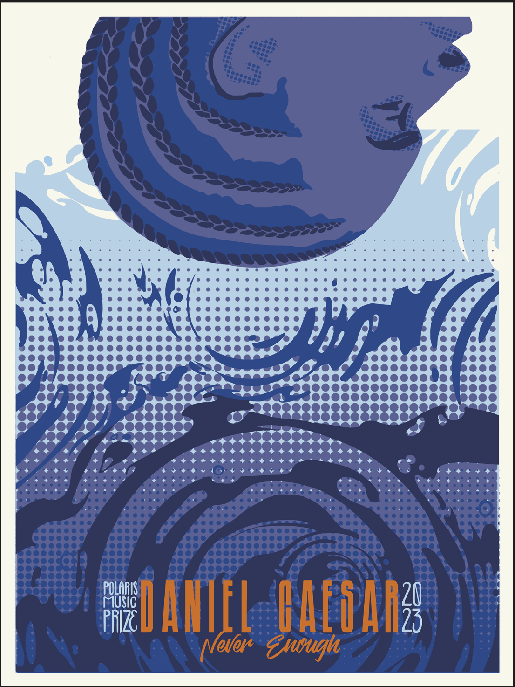
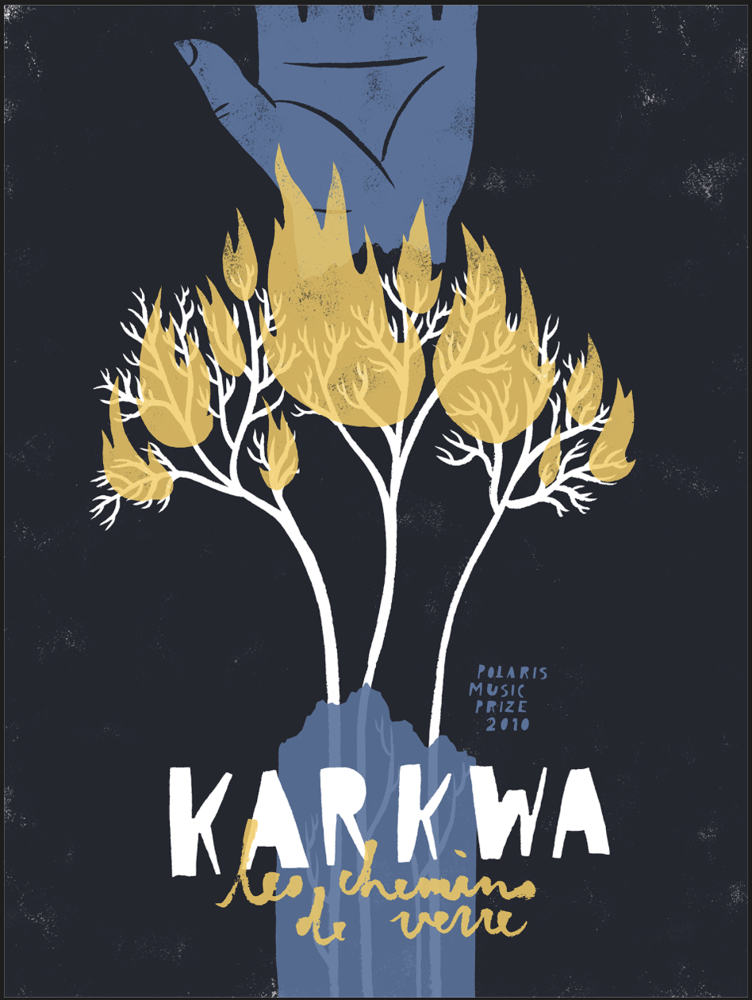
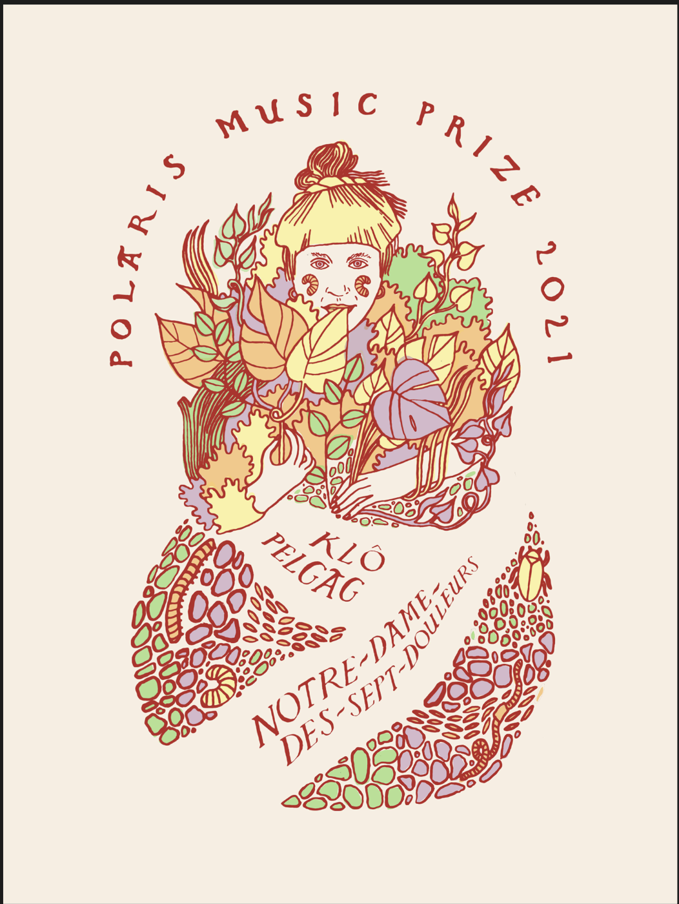
23 septembre 2026
Le journal des conspirationnistes
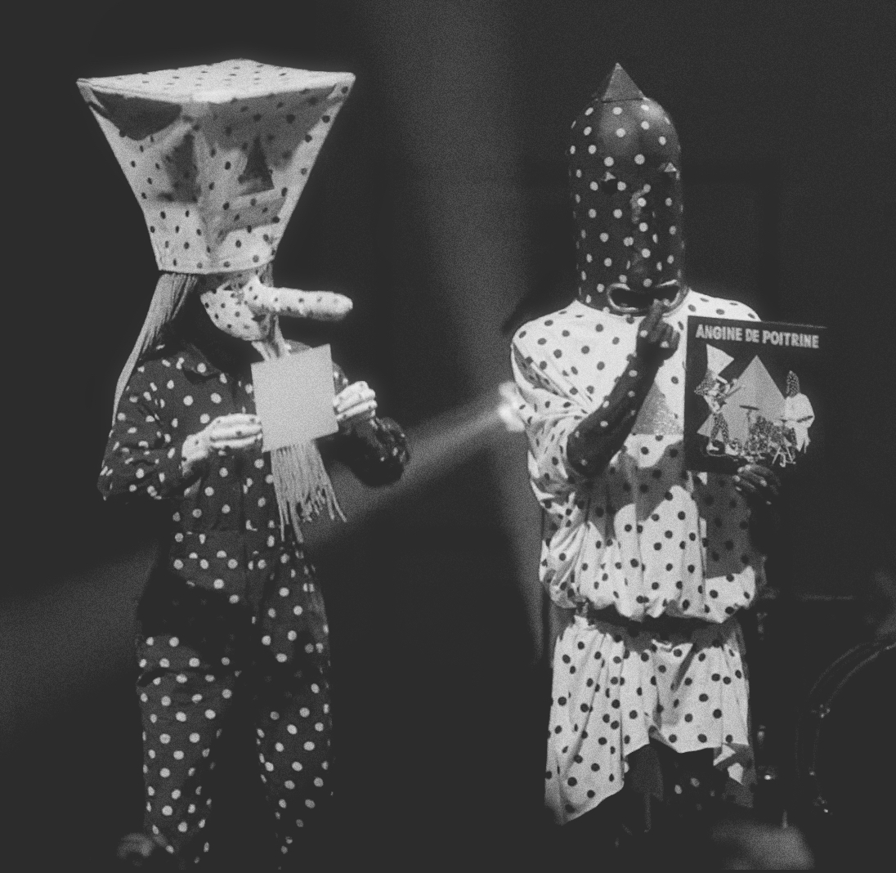
Dans la foule du Massey Hall, qui accueillait la soirée des prix Polaris mardi soir, on pouvait remarquer de nombreux spectateurs habillés de pois, à l’instar du groupe qu’ils étaient venus soutenir. Les jurés du prix Polaris leur ont donné raison : Angine de Poitrine est parti de Toronto en empochant les 30 000 $ du prix Polaris de l’album de l’année pour Vol. II, ainsi que les 10 000 $ du prix SOCAN de la chanson de l’année pour Fabienk.
Le duo, ambassadeur de la musique microtonale, était le dernier des groupes en lice à monter sur scène. Avant eux, le public a pu assister aux prestations de Slash Need, Beverly Glenn-Coppeland, Les Louanges ou encore Begonia.
Le prix du patrimoine Polaris, qui récompense des albums canadiens antérieurs à la création des prix Polaris en 2006, est venu couronner cette année l’album Willie Dunn, de Willie Dunn, sorti en 1971, ainsi que McLaren Furnace Room du groupe The Watchmen.
Pendant la soirée, plusieurs artistes n'ont pas hésité à donner à leur prestation un ton très politique. Tanya Tagaq, invitée pour présenter son album Saputjiji, a à plusieurs reprises insulté le président américain Donald Trump au milieu de sa prestation expérimentale. Nicolas Basque, du groupe Bibi Club, arborait pour sa part les couleurs du drapeau palestinien autour de son poignet.
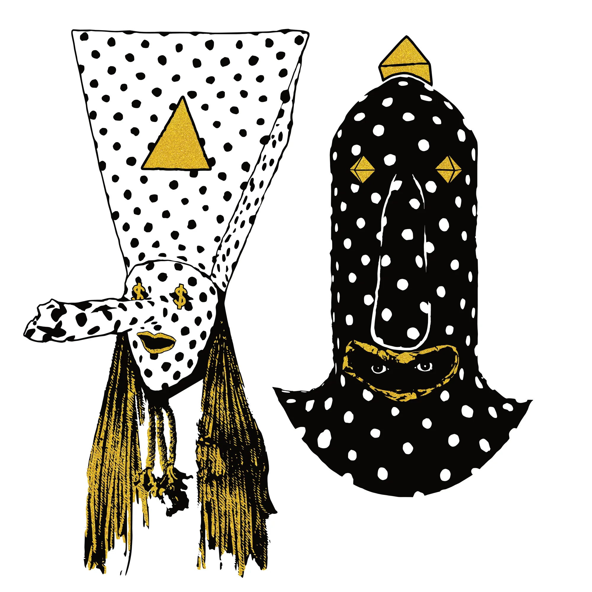
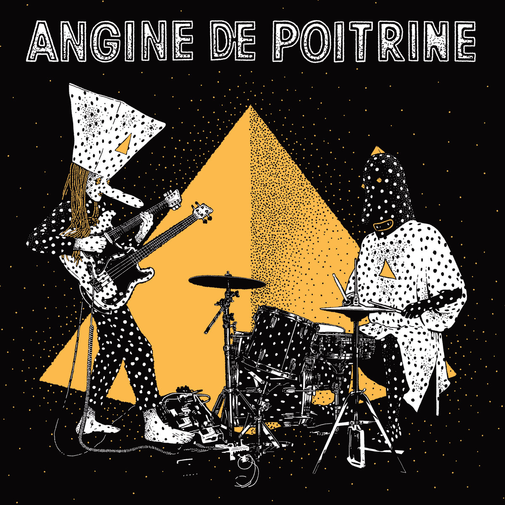
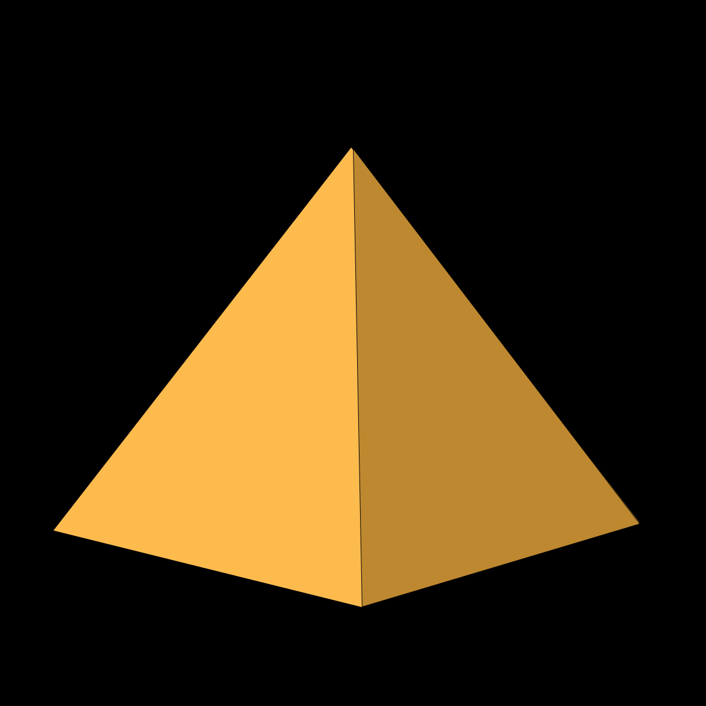
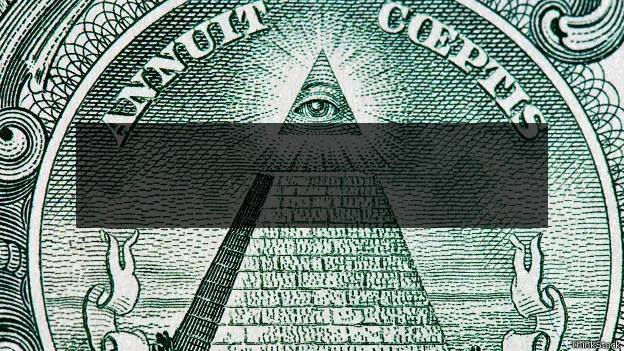
Ou comment le Québec est secrètement au centre d’un complot d'envergure mondial impliquant les communautés francophones. La vérité va vous être délivrée en personne. Plus rien ne va nous laisser dans l'ombre à propos de cette immense affaire qu'on nous cache depuis des siècles. Ne restez plus dans l'obscurité, rejoignez-nous sous la lumière de la vérité. Vous en serrez illuminés. Oui oui, pour vrai. Vous n'en croirez pas yeux, ni vos oreilles. Les septiques ne seront pas choisis pour le voyage. Nenon, ils vont restez à st-foin-foin-du-très-loin, oubliés, alors que vous serez dans la grandeur du nouvel ordre mondial. Toute résistance est futile. Abandonnez-vos croyances, le monde n'est pas ce que vous pensez qu'il est. Ouiiiiiiii. Yeahhhhh. Non, je n'ai pas demandé à l'IA d'écrire ça pour moi et je suis en manque d'inspiration. En tous cas, joignez notre culte, on a des biscuits. Et on va partir avec Gunther. Cet enfant sera sauvé. Oui oui. Sauvé je vous le dit. Hehehehe. Hehehehe ressemble étrangement beaucoup à help en ce moement. Abandonnez-tout espoirs que la Terre est plate, notre secte N'EST PAS anti-science. 100% compatible avec la théorie de l'évolution. Et on se fait même vacciner. On n'est pas des bozos tout de même. J'ai mal à la tête. J'ai perdu des cellules de cerveau pour écrire ceci. Vive angine de poitrine! Sébastien!!! Pourquoi vous lisez les petits caractères. On ne lit jamais ça, on va directement pour signer le contrat habituellement. Arrêtez-moi ça et signez tout de suite. Mouhahaha. Désolé. On m'a dit d'arrêter les rires comme ceux-ci, ça fait apparemment fuir la clientèle. Pardon, les futurs élus. Oui, oui, vive la théorie de élus de la francophonie!!
(édition francophone)
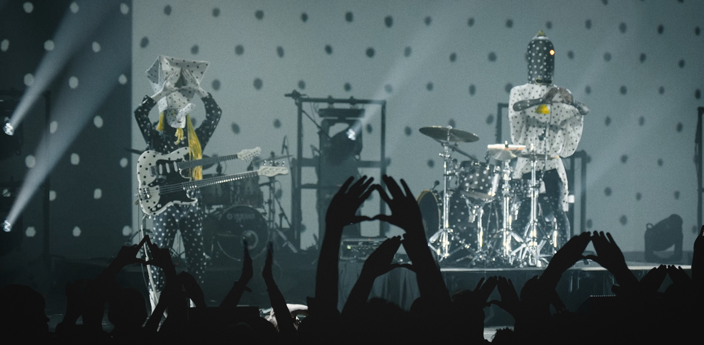
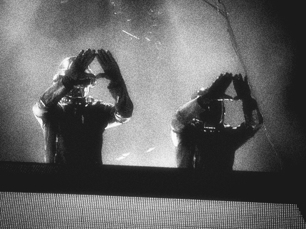
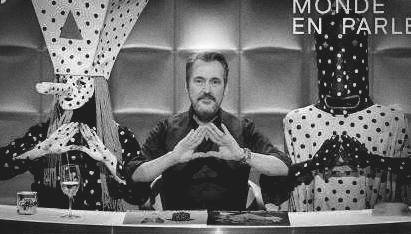
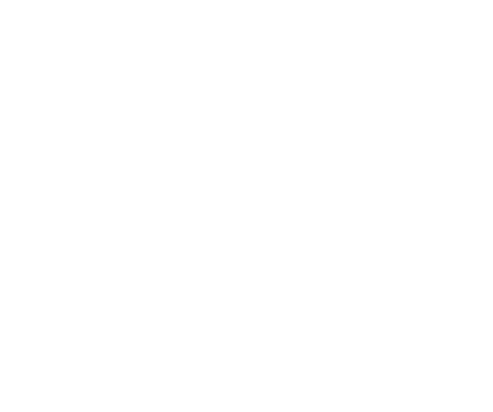


Interstella 5555 et Voyager
Vous dites venir d'une autre planète...
??
??
Consultez sa soeur
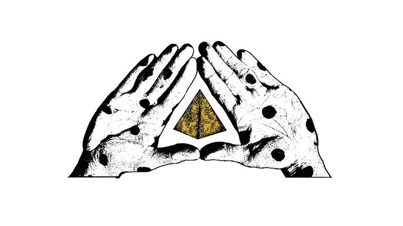
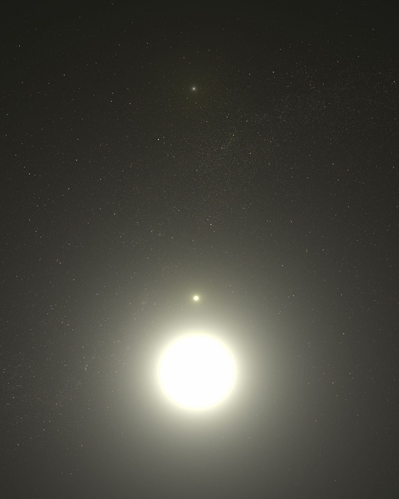
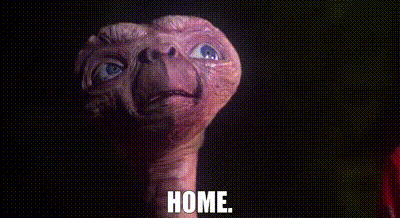